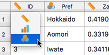
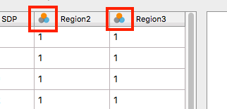
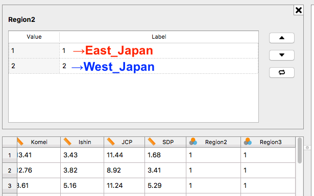

- JASP Ver. 0.8.8.1では、データの中身を修正することはできません。中身の編集はExcel、LibreOffice、Numbersなどを利用します。ここでは尺度の指定とラベルの作成について紹介します。
- データ領域の1行目は変数名です。1列目の変数名は「
ID」ですね。

- 変数名の左には可愛いアイコンが付いていますね。これはこの変数の尺度を表します。このアイコンをクリックしてみましょう。

- 3種類のアイコンがあります。各アイコンの意味は
- 上のアイコン (定規)：連続変数 (間隔・比率変数)
- 中間のアイコン (棒グラフ)：順序変数
- 下のアイコン (3つの円)：名目変数
- IDは定規のアイコンなので、デフォルト上では連続変数扱いされていることが分かります。しかし、IDは名目変数ですね。なので、一番下にあるアイコンをクリックし、名目変数として指定してあげましょう。
- 尺度については私が担当する授業で説明しました。
- IDの場合、数値自体には意味がありませんので、名目変数です。別に北海道が2で、青森が1でも問題ないからです。あくまでも便宜上割り当てたものです。
- 他に財政力指数 (
Zaisei)や高齢者・若者人口比 (Over65,Under30)、各政党の得票率 (LDPからSDPまで)は連続変数ですし、ちゃんと連続変数として指定されているのでこのままでいいでしょう。

- 一番右の変数 (Region2とRegion3)は「地域区分」(東日本、西日本など)です。地域区分もまた名目変数です。つまり、「東日本 = 1 / 西日本 =2」でも、「東日本 = 9 / 西日本 = 5」でも問題ないということです。これはちゃんと名目変数になっていますね。
- しかし、1と2といった数値で表示されているとちょっと意味が分かりづらくなりますね。このような名目変数・順序変数にはラベルを付けることができます。
- 今回は変数名のアイコンではなく、変数名そのものをクリックします。

- このようなラベル指定画面がデータ領域に表示されます。Labelの「1」を「East_Japan」に、「2」を「West_Japan」に書き換えましょう。

- 先までデータ領域で「1」と表示された値が「East_Japan」になりました。ここではお見せしませんが、下の方に行けば、「2」は「West_Japan」になっていることが分かります。
- ここまでしたら、ラベル指定画面右上の「X」ボタンをクリックします。
- 「
Region3」変数もやってみましょう。各値の意味は以下のとおりです。- １：Hokkaido_Tohoku
- ２：Kanto
- ３：Chubu
- ４：Kinki
- ５：Chugoku_Shikoku
- ６：Kyushu_Okinawa
- 「Region3」列も数値が文字列に変換されたことが確認できます。